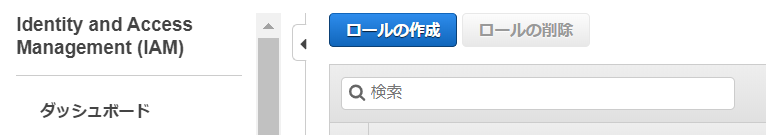
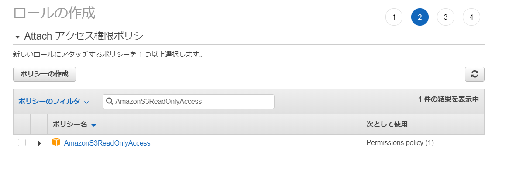
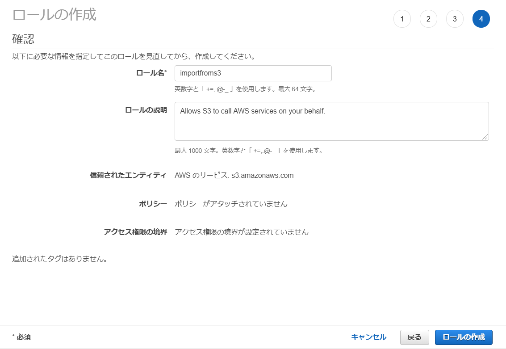
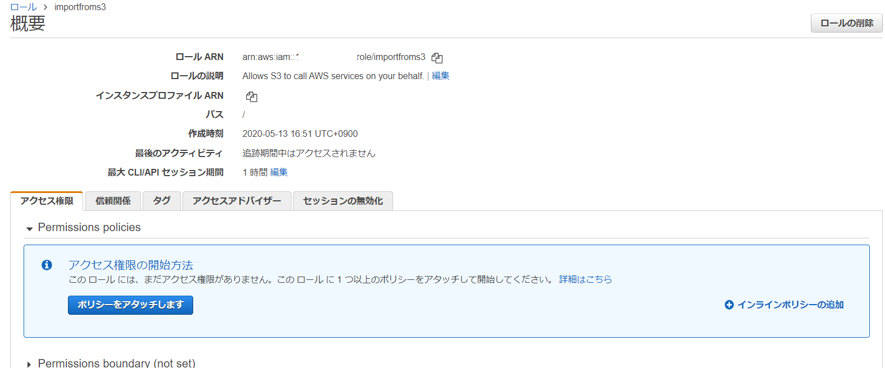
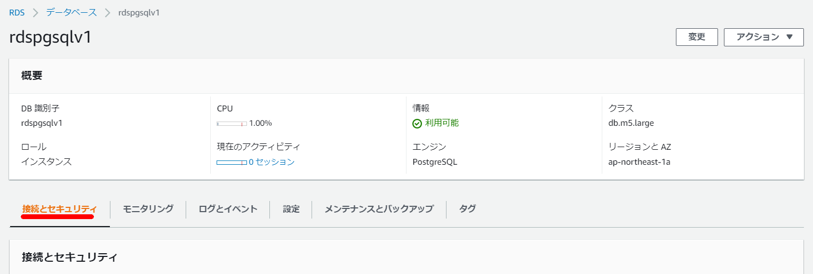
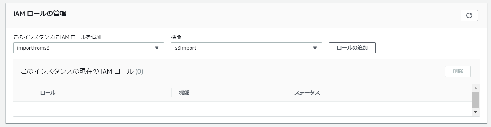
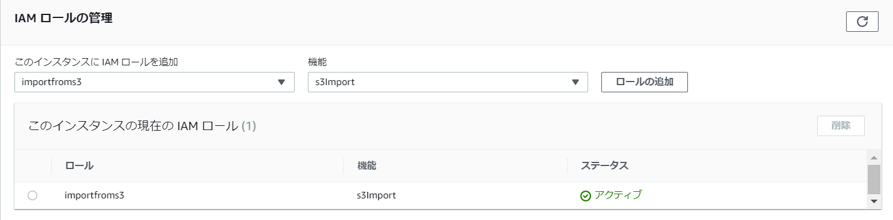

S3からRDS/Aurora(PostgreSQL)にCSVファイルをインポートする
事前設定のIAMロールの設定から実際のRDS(PostgreSQL)に対してCSVファイルのロードを行う。RDSとAuroraで手順に関しては大きく差異はないが、Amazon S3 から Aurora PostgreSQL にインポートするには、データベースで PostgreSQL バージョン 10.7 以降を実行している必要がある。
詳細の手順や制限事項等は下記マニュアルを参照。
PostgreSQL 互換で Amazon Aurora にデータを移行する - Amazon Aurora https://docs.aws.amazon.com/ja_jp/AmazonRDS/latest/AuroraUserGuide/AuroraPostgreSQL.Migrating.html#USER_PostgreSQL.S3Import
IAMロールの設定
データロードのための下準備としてIAMロールの設定を行う。
IAMの画面から「ロールの作成」を選択

S3を選択

「AmazonS3ReadOnlyAccess」を選択してポリシーをアタッチする。

必要に応じてタグを設定。

ロール名は「importfroms3」とした。

作成したロールの画面に移動する。

「信頼関係」-「信頼関係の編集」へと移動して下記を上書きして貼り付ける。

{
"Version": "2012-10-17",
"Statement": [
{
"Sid": "",
"Effect": "Allow",
"Principal": {
"Service": [
"rds.amazonaws.com"
]
},
"Action": "sts:AssumeRole"
}
]
}

「Amazon Neptune クラスターに IAM ロール」を追加する
Neptuneのクラスタに移動して「IAMロールの管理」を選択。

IAMロールの管理のところにて先程作成した「importfroms3」ロールを追加する。機能は「s3import」を指定。


ここまでで事前設定が終わりとなる。
実際のインポート自体はCLI上でコマンドで実施するが、まずはaws_s3を有効化する。
CREATE EXTENSION aws_s3 CASCADE;
インポートコマンド
SELECT aws_s3.table_import_from_s3(
'aozora_kaiseki',
'',
'(format csv)',
'nep-s3-bk',
'utf8_all.csv',
'ap-northeast-1'
);
関数の引数は下記の通り。
PostgreSQL 互換で Amazon Aurora にデータを移行する - Amazon Aurora https://docs.aws.amazon.com/ja_jp/AmazonRDS/latest/AuroraUserGuide/AuroraPostgreSQL.Migrating.html#USER_PostgreSQL.S3Import.FileFormats
aws_s3.table_import_from_s3 関数を使用して Amazon S3 データをインポートする
dbname=> SELECT aws_s3.table_import_from_s3(
'テーブル名',
'カラムリスト', -- 空文字('')の場合は、テーブルのカラムと一致
'PostgreSQL COPYの引数・フォーマット',
'S3バケット名',
'S3キー',
'S3リージョン'
);
約10GB相当のデータを約4分でインポートすることが出来た。
postgres@rdspgsqlv1:postgres> SELECT aws_s3.table_import_from_s3(
'aozora_kaiseki',
'',
'(format csv)',
'nep-s3-bk',
'utf8_all.csv',
'ap-northeast-1'
);
+--------------------------------------------------------------------------------------------------+
| table_import_from_s3 |
|--------------------------------------------------------------------------------------------------|
| 87701673 rows imported into relation "aozora_kaiseki" from file utf8_all.csv of 6539180310 bytes |
+--------------------------------------------------------------------------------------------------+
SELECT 1
Time: 272.534s (4 minutes), executed in: 272.522s (4 minutes)
postgres@rdspgsqlv1:postgres>
psqlのコピーコマンドを使ったCSVインポートと比較してみたが、特に時間としては変わらなかった。
■CSVインポート(COPYコマンド)
[ec2-user@bastin ~]$ time psql -h rdspgsqlv1.xxxxxxxx.ap-northeast-1.rds.amazonaws.com -d postgres -U postgres -c "COPY aozora_kaiseki(file,num,row,word,subtype1,subtype2,subtype3,subtype4,conjtype,conjugation,basic,ruby,pronunce) from stdin with csv DELIMITER ','" < /home/ec2-user/utf8_all.csv
COPY 87701673
real 4m20.753s
user 0m19.471s
sys 0m6.427s